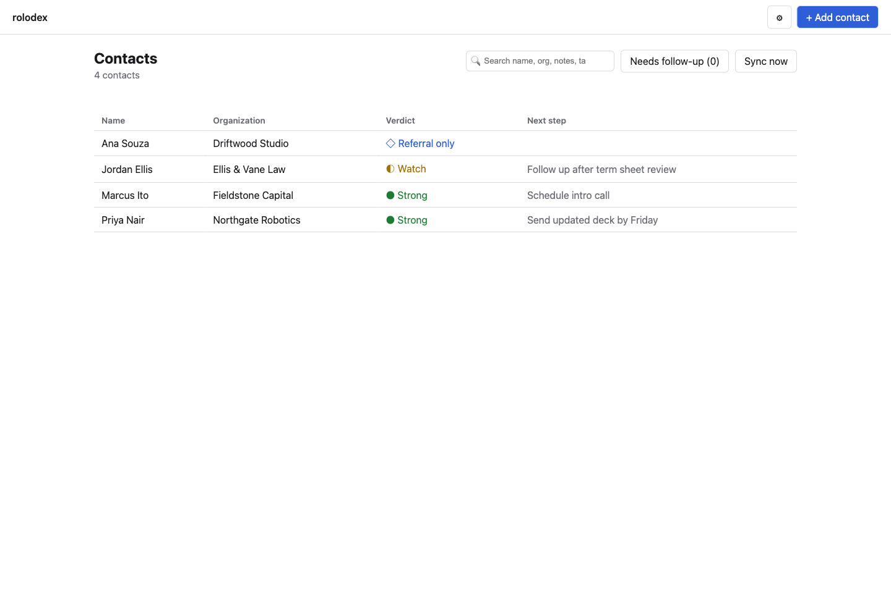
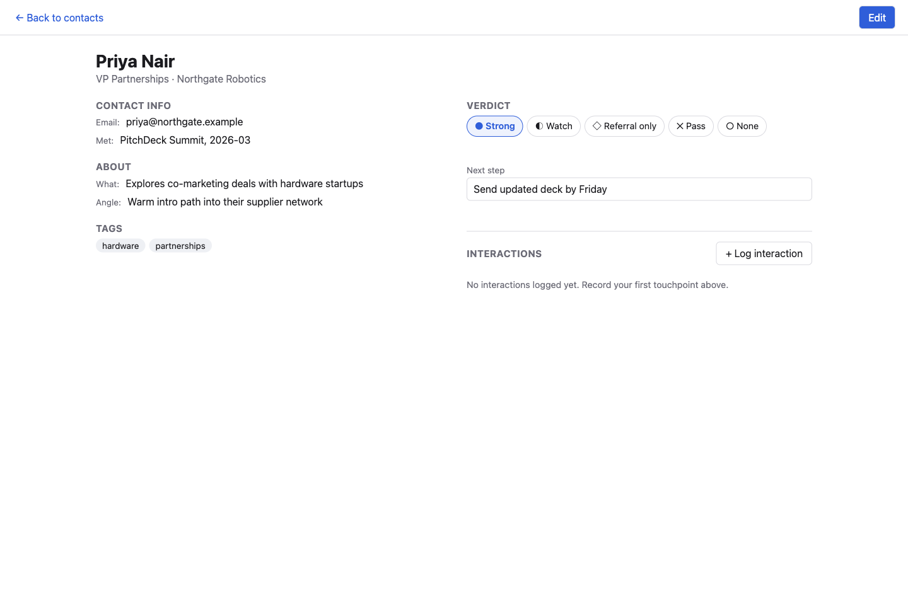

Your rolodex. Your machine. Your rules.
A relationship tracker that runs on your computer, not someone else's server. Contacts, verdicts, next steps, and touch history live in one SQLite file you own — with an optional pull from Google Contacts, and an MCP surface if you want an AI agent to read and update it too.

Not a CRM. A rolodex with judgment built in.
Every install is one person's own data. No accounts, no team seats, no server to trust.
Local SQLite, full stop
Your contacts live in one file on your own disk. No hosted database, no vendor to go out of business.
Verdict & next step
Every contact carries a real read on the relationship — strong, watch, referral-only, pass — plus what to do next.
Who's gone cold
A configurable follow-up window surfaces contacts with an open next step and no recent touch.
Google Contacts, one-way
Pull from Google Contacts without losing your own notes — verdict, angle, and next step always survive a sync.
OS Keychain, not a .env
OAuth credentials live in your operating system's keychain through a pluggable adapter — never a file, env var, or log.
MCP-ready
Add rolodex to Claude or any MCP host and an agent can search, log, and update your rolodex directly.

Every contact carries the whole relationship
How you met, what they do, the angle of the partnership, and a running log of every call, email, and meeting — searchable, and never silently overwritten by a sync.
- Org, role, and how you met
- Full-text search across every field
- Interaction history with timestamps and channel
- Tags for your own categorization
Let your AI agents use it too
The standalone app is the primary way to use rolodex — but a stdio MCP server ships alongside it, wired to the exact same store. Add it to Claude Code or any MCP host, and a bundled skill teaches the agent how to use it well: search before creating, never fabricate a match, respect the verdict enum.
Running locally takes a minute
Requires Node ≥ 22. No account, no signup, no install script phoning home.
# clone and install $ git clone https://github.com/mdostal/rolodex.git $ cd rolodex && npm install # run the app $ npm run shell # → http://127.0.0.1:PORT, first-run wizard walks you through the rest